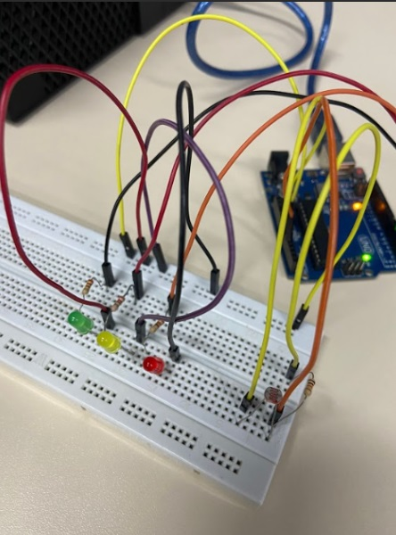
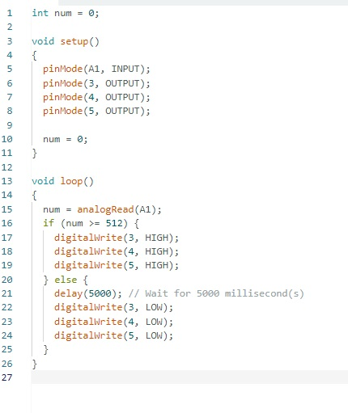
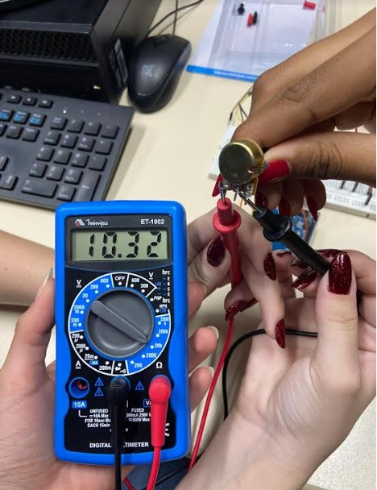
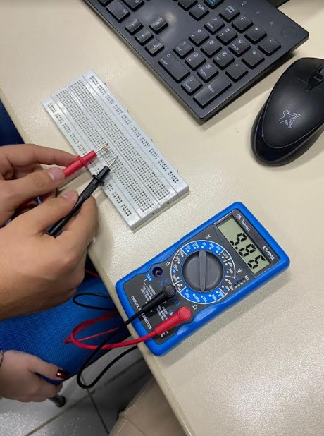
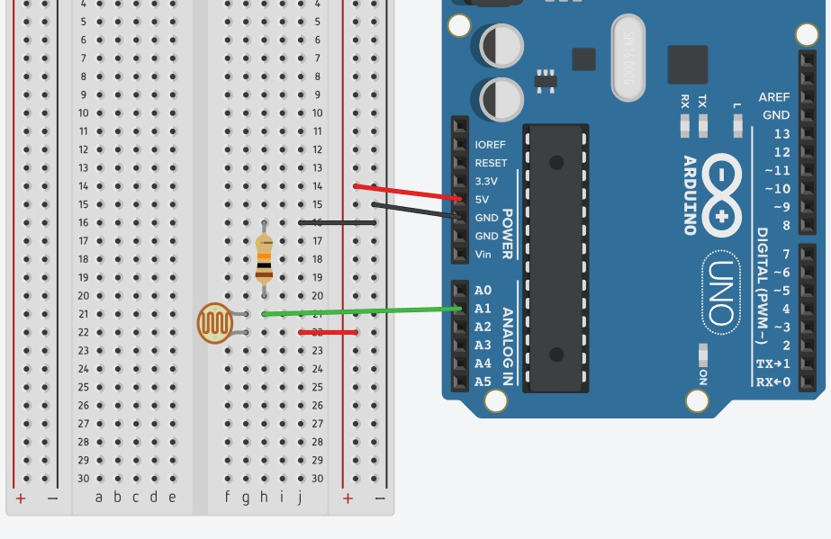
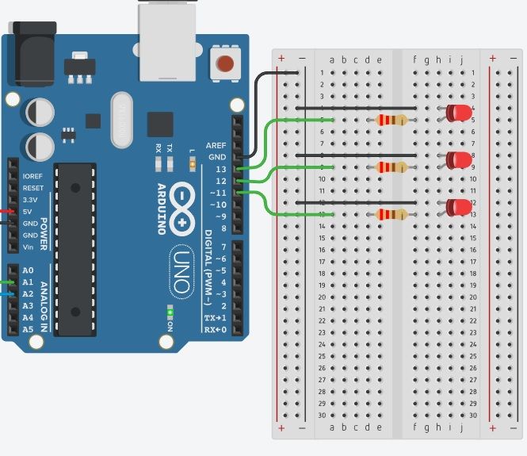

principal
controle de iluminação
Curiosidades sobre o LDR
LDR pratica:

fonte: autor
código C++ no IDE ARDUÌNO:

filmagem do controle de iluminação funcionando:
medidas realizadas com o multímetro:
 
Print de tela da ligação do LDR e LEDs no Tinkercad:
 